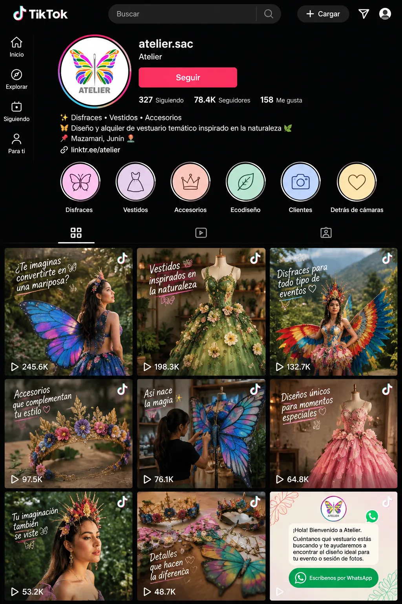

Voz y canales
Cálida, sencilla y llena de imaginación.
Atelier se comunica con un lenguaje cercano, amigable y claro para generar confianza y compromiso.

Mensaje principal
“Creamos vestuarios únicos y ecodiseños silvestres para inspirar.”
La idea fuerza destaca la exclusividad del vestuario temático y la confección sostenible. Puede utilizarse al inicio o cierre de afiches, folletos, banners y presentaciones.
Tono de voz
Así habla Atelier
Elige un canal para explorar el ejemplo de mensaje que aparece en el documento.

FACEBOOK
¿Tienes un evento especial y buscas algo diferente? En Atelier encontrarás vestuarios y disfraces únicos, inspirados en la naturaleza y creados para que vivas una experiencia inolvidable.
Ejemplo de atención
Una conversación que invita a imaginar
ATELIER · ASESORA¡Hola! Bienvenido a Atelier. Cuéntanos qué vestuario estás buscando y te ayudaremos a encontrar el diseño ideal para tu evento o sesión de fotos.
CLIENTEBusco algo diferente para una sesión de fotos en la naturaleza.
ATELIER · ASESORA¡Qué buena idea! Podemos explorar diseños inspirados en flores, mariposas y otras formas de la naturaleza. ¿Qué estilo tienes en mente?
Tono de voz en acción
Así suena cada tono
Cinco frases por tono. Úsalas como guía para publicar y responder.
Pruébalo
Responder con la voz de Atelier
Elige una situación y mira cómo respondería la marca.